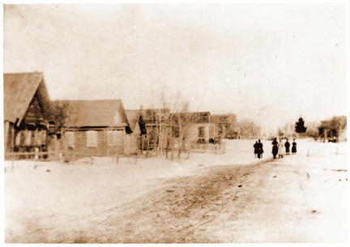
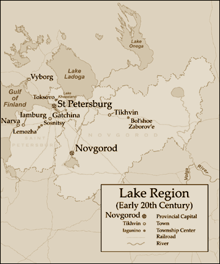

Chapter 2
A Litigious Person and Her Possibilities

Village street, early twentieth century.
From the collection of Mikhail Zolotarev.
Chapter two is based on a series of suits over family property brought by a peasant woman from 1908 through 1917. The map allows readers to locate Lemozha village, a settlement in Sosnitskii township, in the countryside west and south of St. Petersburg.

Map of Lemozha Village, Courtesy of Matthew Knutzen, based on materials from the Map Division of the New York Public Library.
© 2004 Jane Burbank, New York University
with permission from Indiana University Press